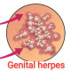

Herpes Genital
Rx:
1. Tab Acyclovir 400mg N=39 tds
2.Oint Acyclovir N=1 topical use
نکته:
در صورتی که مکررا تکرار شود هر 12 ساعت تا 6 ماه باید مصرف شود.
✳️painful genital ulcers
✳️dysuria
✳️fever
✳️tender local inguinal lymphadenopathy
1️⃣ سیفلیس
2️⃣ شانکروئید
Drug eruption 3️⃣
4️⃣ سندرم بهجت
5️⃣ کاندیدیازیس
6️⃣ گرانولوم اینگوئینال
7️⃣ لنفوگرانولوم ونروم
8️⃣ درماتیت تماسی
9️⃣ اریتم مولتی فرم
🔟 لیکن پلان
1️⃣1️⃣ تروما
Hand-Foot-and-Mouth Disease (HFMD) 1️⃣2️⃣